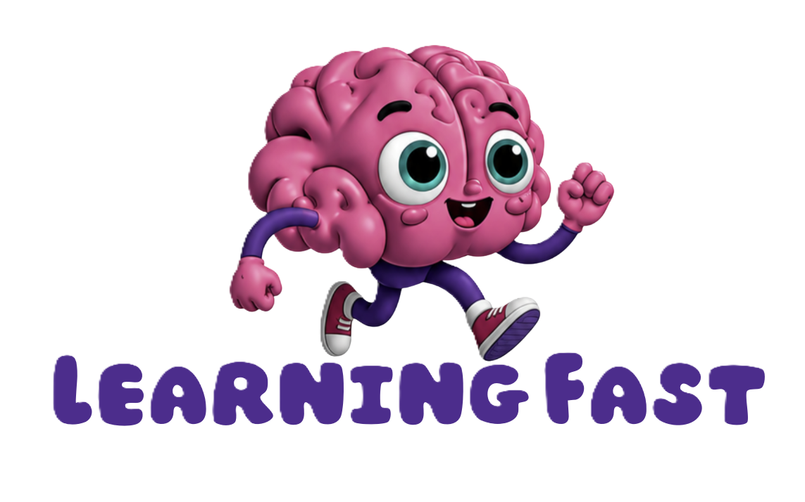

Παίξε, θυμήσου, ανακάλυψε!
Αρκεί ένα μικρό όνομα ή ψευδώνυμο. Οι παίκτες αποθηκεύονται μόνο σε αυτή τη συσκευή.
Με το πληκτρολόγιο: τα βελάκια μετακινούν, το Enter ή το Κενό ανοίγει την κάρτα.
Τα δεδομένα αποθηκεύονται μόνο σε αυτόν τον browser, σε αυτή τη συσκευή. Δεν συγχρονίζονται και δεν αποστέλλονται πουθενά. Προτείνεται μικρό όνομα ή ψευδώνυμο αντί για ονοματεπώνυμο. Το όνομα κρατιέται μόνο στη λίστα παικτών. Οι παρτίδες συνδέονται με έναν κωδικό.
Κινήσεις: κάθε προσπάθεια με δύο κάρτες. Χωρίς ζευγάρι: προσπάθειες με δύο διαφορετικές κάρτες. Ποσοστό: πόσα από τα ζευγάρια της παρτίδας βρήκε το παιδί. Αν τελείωσε την παρτίδα, είναι πάντα 100%. Αν σταμάτησε στη μέση, δείχνει μέχρι πού έφτασε (π.χ. βρήκε 3 από τα 6 ζευγάρια = 50%). Βοήθειες: καταγράφονται χωριστά, γιατί μια παρτίδα με βοήθεια δεν είναι ισοδύναμη με μια χωρίς. Ο χρόνος δεν περιλαμβάνει την προεπισκόπηση.
Οι αριθμοί είναι δείκτες επίδοσης σε αυτό το παιχνίδι. Δεν αποτελούν διαγνωστικό εργαλείο ούτε μέτρηση της «μνήμης» ή της «προσοχής» του παιδιού. Η δυσκολία δεν αλλάζει ποτέ αυτόματα. Το επίπεδο το επιλέγει ο ενήλικας.